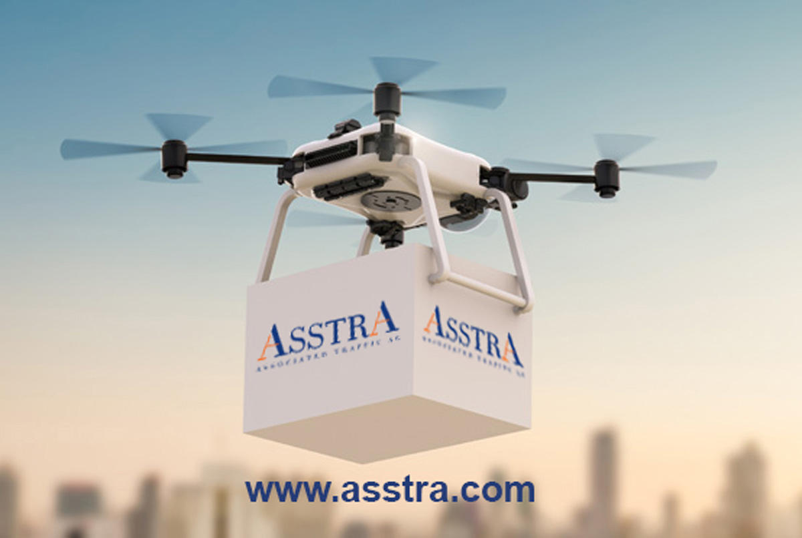

Основное влияние будут оказывать уже известные мегатренды: новые технологии, рост электронной коммерции и устойчивое развитие. При этом некоторые области будут развиваться быстрее остальных, поэтому важно понять скрытые тренды и их значение для логистики, в том числе из-за влияния пандемии COVID-19 на глобальную торговлю и рынок труда. Как мировой лидер в сфере логистики, мы обладаем инсайтами и опытом для оценки ситуации».
«Следующая большая задача заключается в том, чтобы подготовить персонал индустрии логистики к вызовам будущего, провести повышение квалификации и обучить работе в рамках технологически сложных операционных процессов. В ближайшие годы этот вопрос станет приоритетным для стратегического развития организаций цепочек поставок.
Мы живем в период общей стабилизации трендов последних четырех лет. Однако в индустрии логистики, которая находится под серьезным влиянием глобальной пандемии, отмечается ускорение процессов трансформации. Пандемия COVID-19 привела к динамичным изменениям в сфере последних логистических инноваций, автоматизации и цифрового рабочего пространства и на несколько лет приблизила диджитализацию отрасли. В то же время оказался еще не раскрыт потенциал многих трендов, которые изначально воспринимались как прорывные для индустрии логистики. Так, активное использование беспилотных автомобилей и дронов сдерживается в связи с юридическими и техническими трудностями, а также из-за отсутствия активной поддержки общества. Логистические маркетплейсы укрепляют свои позиции на нескольких ведущих платформах, и в игру вступают известные экспедиторские компании, которые создают цифровые предложения при поддержке надежных глобальных логистических сетей. Профессионалам в логистике необходимо разбираться в большом числе инновационных технологий – от облачных вычислений до коллаборативной робототехники, аналитики больших данных, искусственного интеллекта и интернета вещей. Модернизация всех точек взаимодействия в цепочках поставок, в том числе создание эффективного цикла цифрового взаимодействия с клиентом, обработка и транспортировка заказов, а также доставка последней мили стали необходимостью для долгосрочного успеха. Конкурентное преимущество на рынке получают те, кто внедряет и масштабирует новые технологии и быстро обучает персонал.